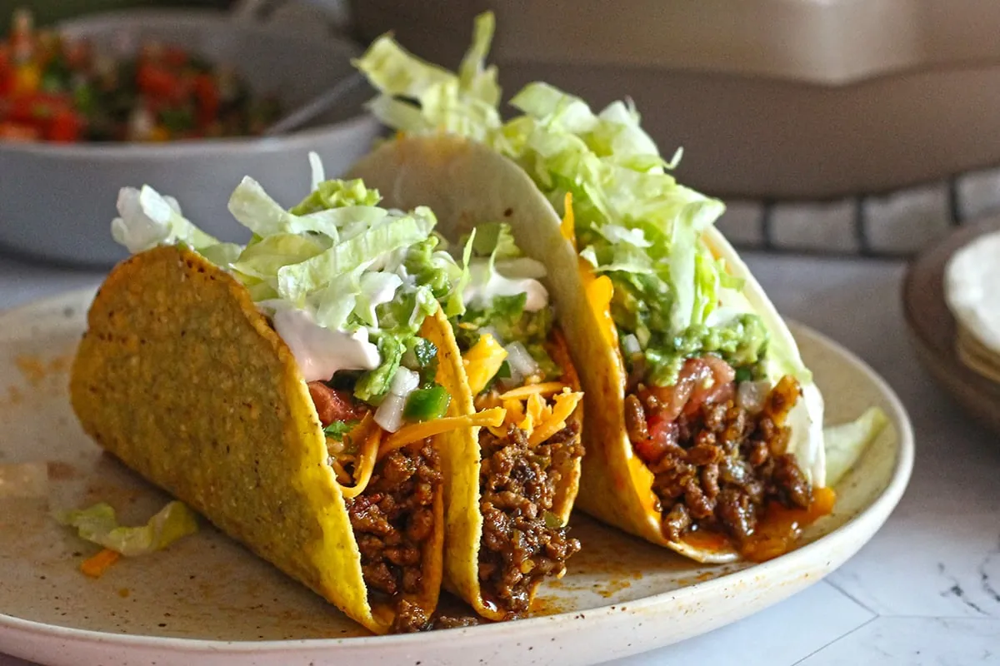

Main Dishes
Fried Chicken
Crunchy fried chicken served with a fresh cilantro-yogurt chutney.
Crunchy and soft tacos with beef, pico de gallo and fresh guacamole.

Every step is ticked off. Want to cook it again?
Main Dishes
Crunchy fried chicken served with a fresh cilantro-yogurt chutney.

Main Dishes
Turkish-style spaghetti coated in a tomato and red pepper paste sauce.

Main Dishes
The classic Margherita: tomato sauce, fresh mozzarella and basil.